Everything you can do in Smart Shift, in the order you will need it.
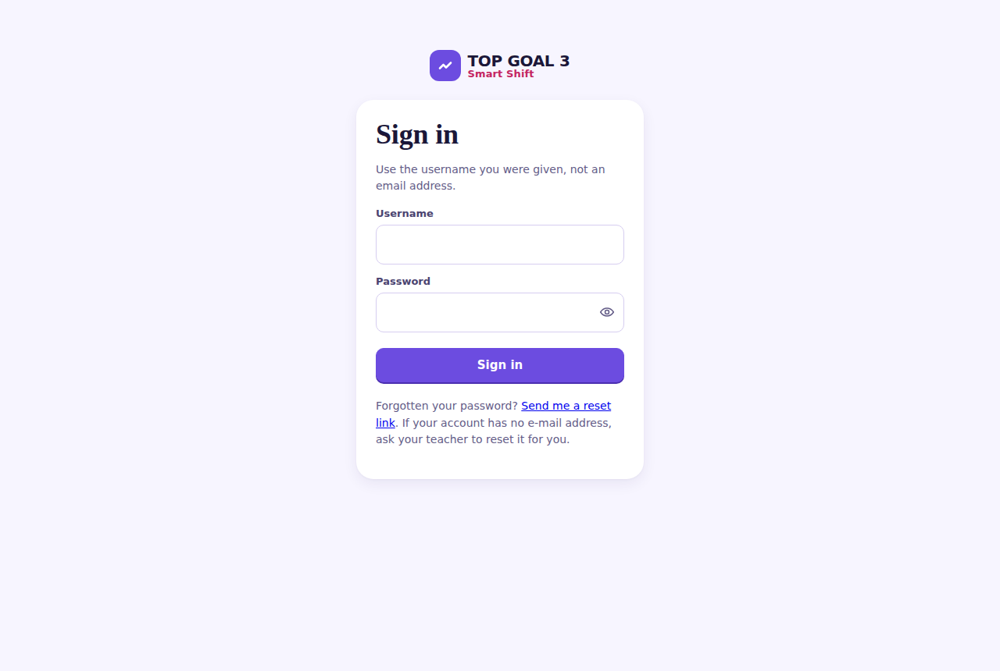
Teacher, teacher and TEACHER all reach the same account.
Your password is different: every capital in it counts.
Every password box has an eye at its right-hand edge. Press it to read what you typed, and press it again to hide it. The box is never revealed on its own, and what you typed is not lost when you look at it.
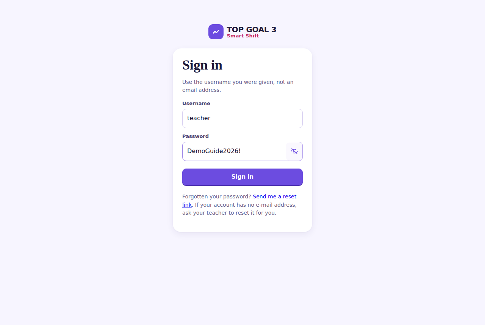
Four places, always along the top:
| Where | What it holds |
|---|---|
| Dashboard | Who needs a look at today. |
| Class progress | Every student, and how far each has gone. |
| Students | Adding accounts, resetting passwords. |
| Curriculum | Your units, and everything inside them. |
The speech-bubble icon beside your name is your messages. Your name opens your own settings. Sign out is at the far end.
This is the first screen after you sign in, and it answers one question: who should I look at today?
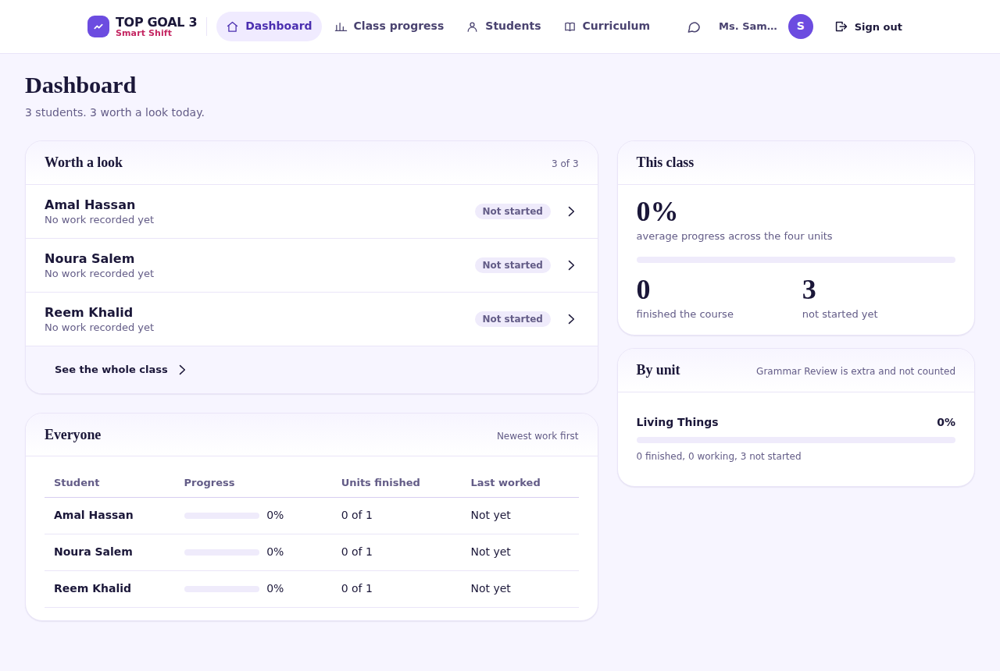
Choose any student's name to open her own page.
Curriculum lists every unit, with what each one holds.
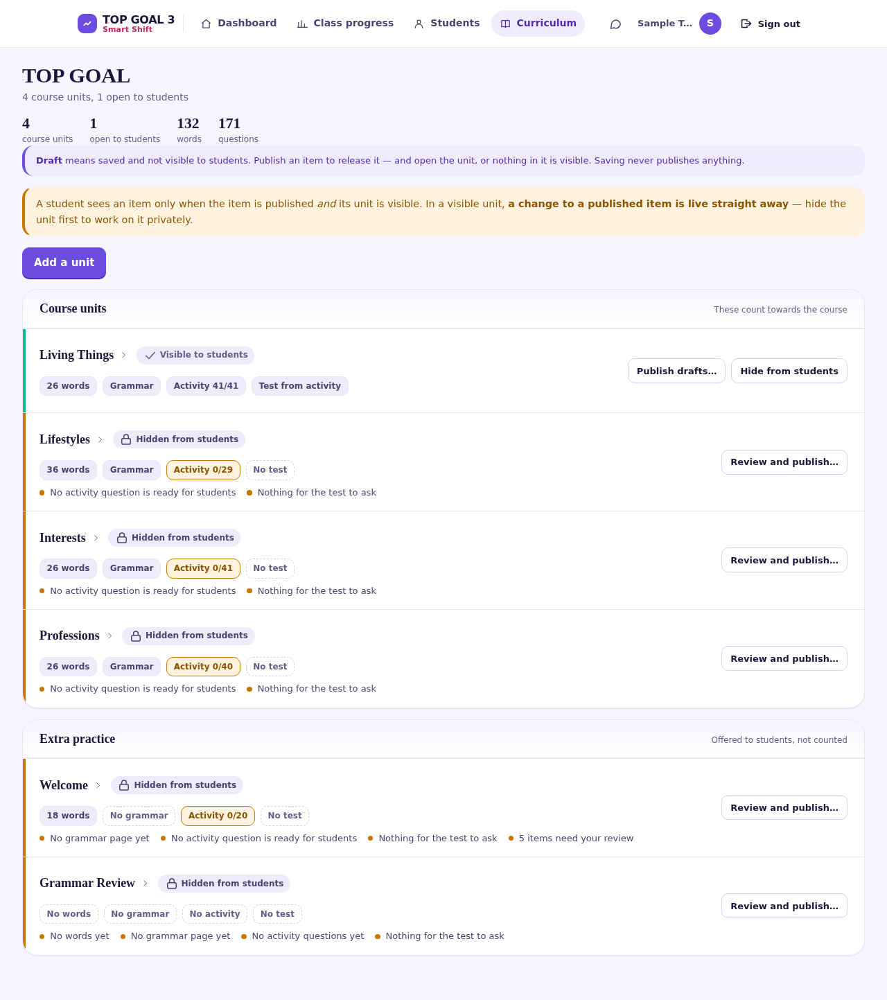
Units sit in two groups:
Choose a unit's name to open it. Inside, four tabs follow the order a student meets them: Vocabulary, Grammar, Activity, Unit test.
If you read only one section, read this one.
| Word | Meaning |
|---|---|
| Draft | Saved, and not visible to students. Safe to work on. |
| Published | Released — visible, once the unit is visible too. |
| Hidden from students | The whole unit is closed, whatever is published inside it. |
The Vocabulary tab holds the unit's words: the English word, its Arabic meaning, and a picture or a recording where you have added one.
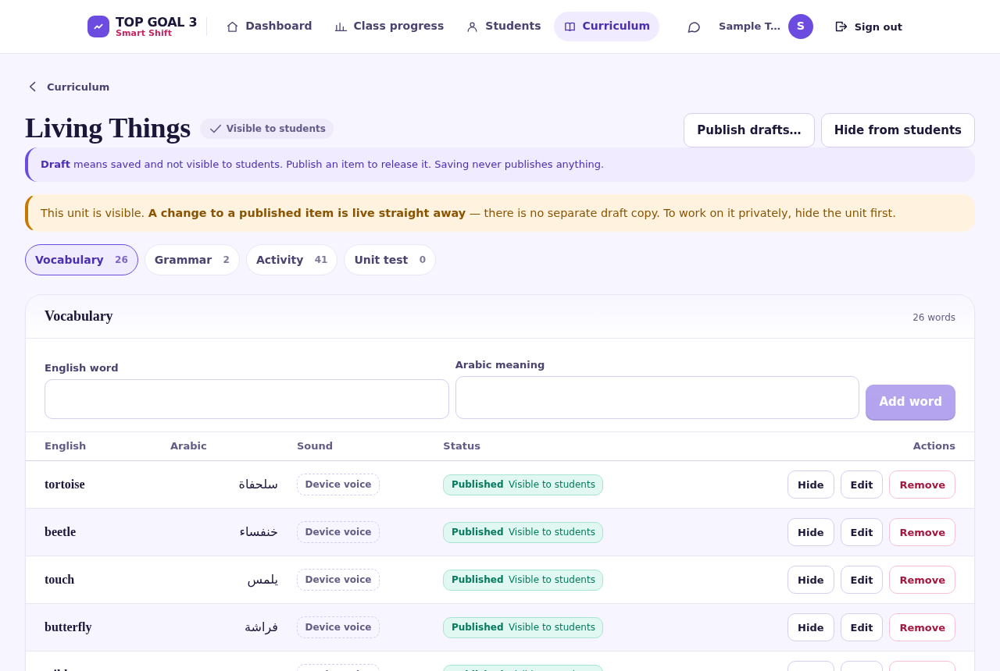
The Grammar tab holds the unit's grammar pages — an explanation, examples, and a picture of the page from the book where you have added one.
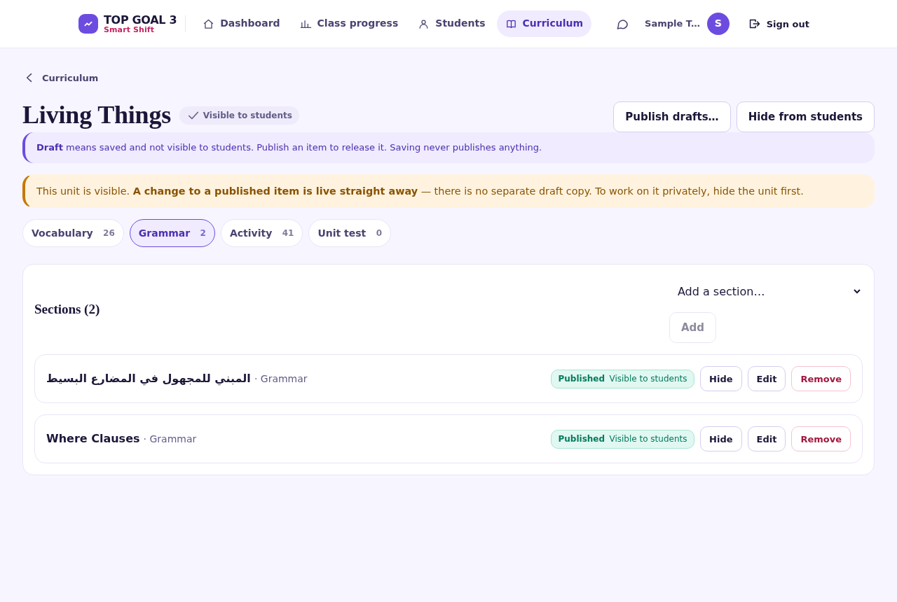
The Activity tab is where you write the questions students practise on. Each one can be published, edited or left as a draft on its own.
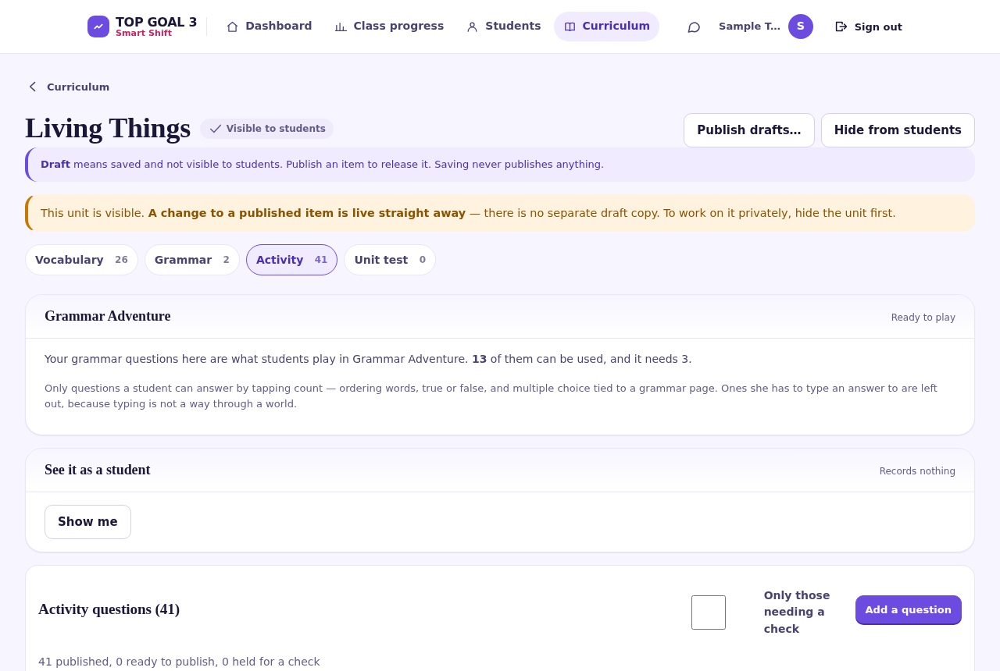
Try it as a student at the top shows exactly what a student would be asked, shuffled as she would see it. It records nothing.
The Unit test tab works like the Activity tab, but its questions are kept for the test. A student does not meet them while practising.
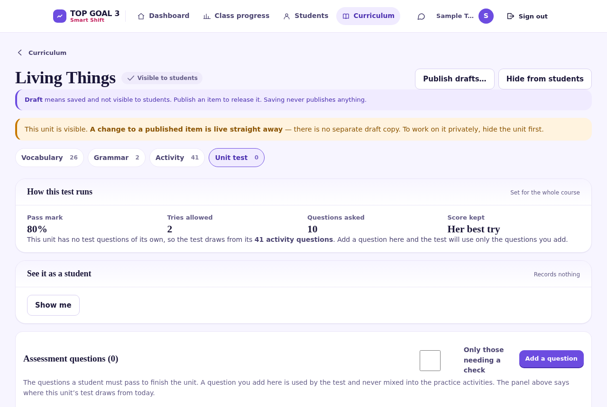
On the Curriculum screen the unit's chip changes from Hidden from students, and the count at the top of the page — open to students — goes up by one. That count is the quickest check that a release worked.
There are three games. They are for practice and enjoyment: nothing a student does in a game is recorded — no progress moves, no score is kept, no test attempt is spent.
| Game | What it plays | Needs |
|---|---|---|
| Memory Match | The unit's words and meanings. | 6 complete words |
| Quick Match | The unit's words and meanings. | 4 complete words |
| Grammar Adventure | The unit's grammar questions. | 3 usable questions |
The game has no content of its own. It plays the published grammar questions from the unit's Activity tab — so writing those questions is what switches the game on. The Activity tab tells you where the unit stands:
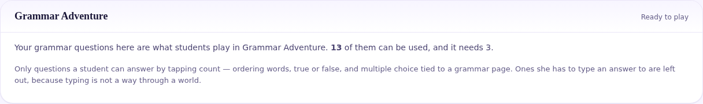
Students is where accounts are made and looked after.
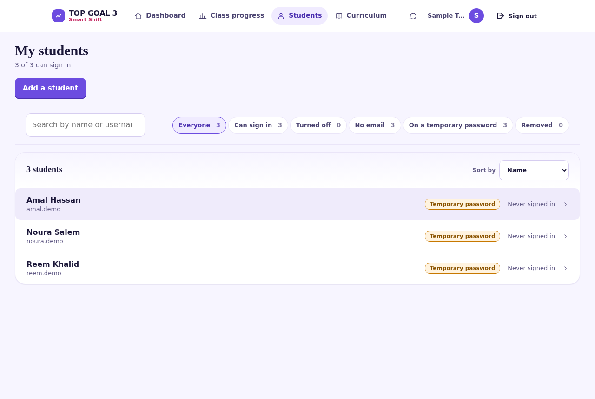
sara exists, Sara is refused — because the two would be the
same name to a student trying to sign in.
Class progress shows every student and how far each has gone.
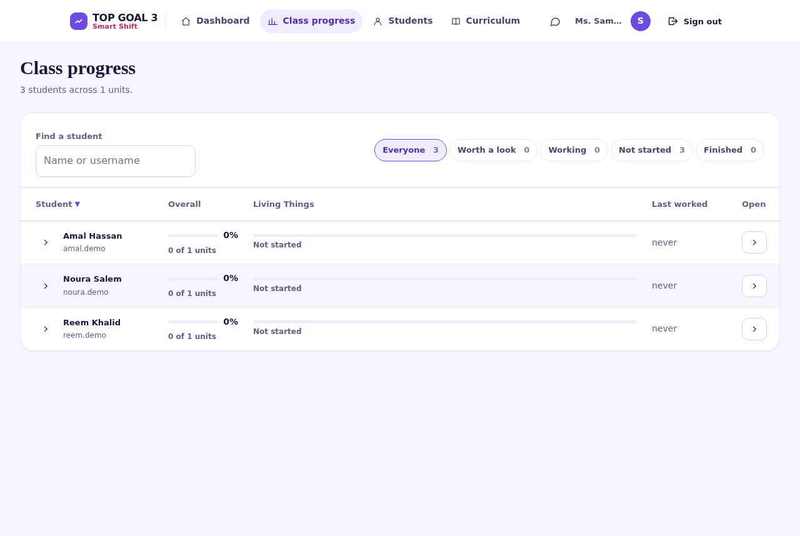
Choose a student to open her own page: which words she has learnt, which grammar pages she has read, how her activities and tests went, and when she last worked. You can write to her from the same page.
The speech bubble at the top right is your messages. A number on it means something is waiting. It checks for new messages roughly every two minutes.
Choose it to see which students are waiting, and choose a student to open her conversation. Messages stay inside the platform.
Your settings — behind your name at the top — hold a WhatsApp number.
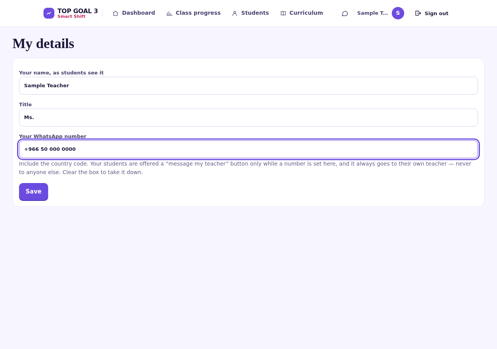
+966 5x xxx xxxx.If your account has no e-mail address, ask your school's administrator to reset it for you.
Reset it from the Students screen — see section 12.
Sign out is at the top right. Use it on a shared staffroom machine.
Check both halves: the item must be Published and the unit must not be Hidden from students. On the Curriculum screen, the open to students count at the top tells you how many units are actually released.
Capitals in her username do not matter, so that is not the cause. Check the username is spelled right, and reset her password from the Students screen. If she has just changed her password, she has to sign in again with the new one — that is normal.
Open the unit's Activity tab and read the panel at the top. It needs three questions a student can answer by tapping. Spelling and other typed questions do not count towards it.
Both games pair a word with its Arabic meaning. A word with no meaning cannot be paired, so it is left out.
That is how a visible unit behaves. To work on a live unit privately, hide the unit first, make your changes, then make it visible again.
Sign in again. If it keeps happening, tell the school's administrator — an account that has been deactivated, or a school that has been closed, ends sessions straight away.
No. Nothing in a game is recorded — not progress, not a score, not a test attempt. They are for practice and enjoyment.
No, and neither can anyone else. Passwords are not stored in a readable form. If one is lost, reset it.
No. You see your own students. Your school's administrator sees the school. No-one outside your school sees anything at all.
Never. Saving and publishing are separate, deliberately.
Yes. Every screen works on a phone, though the unit editor is easier on a larger screen.
Ask before you do it. Removing an account is not the same as correcting a mistake in a name, which you can edit directly.